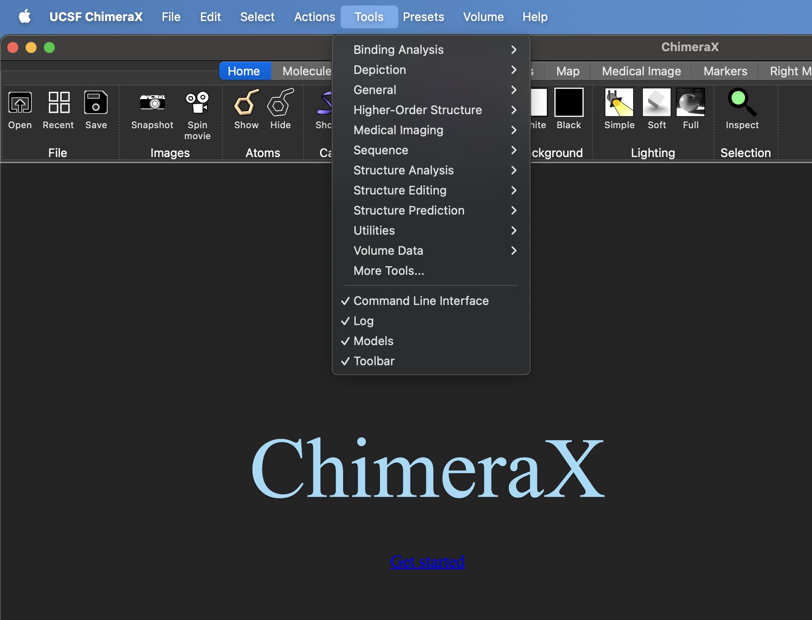

Installation
Installation of ChopChopMF
- Download the latest Version of ChimeraX (version ~=1.9) to your operating system from here: ChimeraX Download.
Then pick one of the two installation methods below.
You can install ChopChopMF by toolshed through the GUI within ChimeraX or by command line.
Recommended Installation via Toolshed through ChimeraX
We recommend Installation through ChimeraX, you do not need any command, If ChopChopMF is not directly listed on the Toolshed start page, just search for ChopChopMF
GUI
- Under
ToolsselectMore Toolsa new window with the toolshed will open. Search for ChopChopMF and install the latest version.

Command Line
-
Run these commands in the ChimeraX shell:
toolshed reload alltoolshed install ChopChopMF -
Relaunch ChimeraX
-
Download the latest ChopChopMF version release.
-
Open ChimeraX and install the package using the command:
toolshed install chimerax_chopchopmf-1.4-py3-none-any.whl -
Relaunch ChimeraX